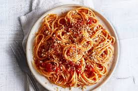

Spaghetti Recipe

Red Sauce Pasta
is a popular pasta variant made with a bright, tangy homemade tomato sauce. This tomato based sauce is usually made by sautéing onions & garlic in olive oil to which fresh or canned tomatoes or tomato puree is added. The ingredients are further cooked until the sauce thickens.
Ingredients
- 2 kg pasta
- 1 kg ground beef
- 1 kg ground pork
- 2 big packs of Hunts Tomato Sauce Parmessan
- 4 bottles of Hunts Tomato Ketchup
- 1 small pack of tomato paste
- 3 blocks of cheese
- 7 cloves of garlic minced
- 7 big red Onions minced
- 1 block of butter
Steps
- add ground beef and port to the pan
- add salt and pepper to the ground meet
- add 1/4 cup of water and boil the meat until dry
- add a bit of cooking oil and fry the ground meet until golden brown
- remove the ground meet and set aside
- Using the same pan, saute chopped onions with 1/4 butter until translucent
- add in the garlic until color is golden brown
- add the meet to the sauted garlic and onion
- add in 2 cubes of beef cubes and mix until completely dissolved
- add in 2 packs of Hunts tomato sauce
- add in 4 bottles of Hunts tomato ketchup
- add in tomato paste
- grate 2 blocks of cheese and add to the mix